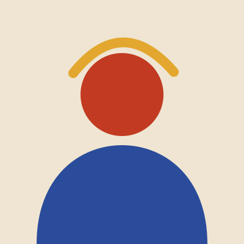

À propos de nous
Paul Dechewsky, galeriste
Passionné de peinture, Paul Dechewsky travaille dans le milieu artistique depuis plus de 30 ans. Il vit de sa passion en exposant et en vendant ses propres œuvres et celles d'artistes de la mouvance expressionniste.
Sa galerie parisienne accueille particuliers, artistes et investisseurs, avec une ambition : un lieu digne de l'art qu'il présente.
Une galerie digne de l'art qu'elle porte.
Un parcours de plus de 30 ans
Débuts dans l'art
Plus de 30 ans de passion pour la peinture et le milieu artistique.
Ouverture de la galerie
Dedal des Couleurs ouvre ses portes à Paris, rue de la République.
Premières expositions
Soutine, Modigliani, Chagall : les maîtres de l'expressionnisme sont exposés.
Aujourd'hui
Une collection vivante, des expositions régulières et un site pour la partager.
Artistes exposés
- Soutine
- Modigliani
- Kikoine
- Pascin
- Chagall
- Picasso
Nos prestations
Conseil à l'achat
Nous vous aidons à trouver l'œuvre qui vous touche et à acheter en confiance.
Organisation d'expositions
Nous facilitons la préparation et l'accueil de vos expositions.
Accueil des artistes
Nous recevons les artistes pour présenter leur travail au public.